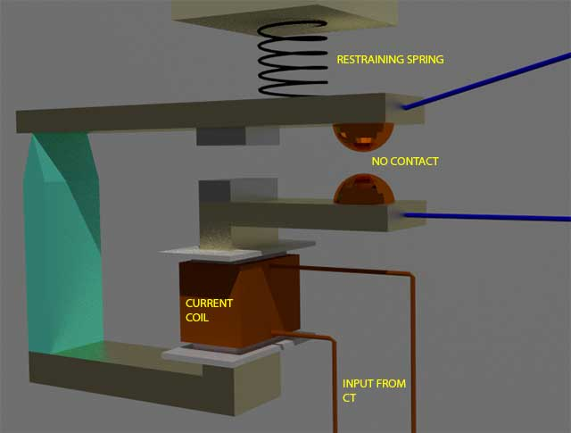

Types of Over Current Relay
Instantaneous Over Current Relay
Definite Time Over Current Relay
Inverse Time OC Relay
Inverse Definite Minimum Time Over Current Relay or IDMT O/C Relay
In an over electric current relay or o/c relay the actuating quantity is only current. There is only one electric current operated element in the relay, no voltage coil etc. are required to construct this protective relay.
Working Principle of Over Current Relay
In an over electric current relay, there would be essentially a electric current coil. When normal electric current flows through this coil, the magnetic effect generated by the coil is not sufficient to move the moving element of the relay, as in this condition the restraining force is greater than deflecting force. But when the electric current through the coil increased, the magnetic effect increases, and after certain level of current, the deflecting force generated by the magnetic effect of the coil, crosses the restraining force, as a result, the moving element starts moving to change the contact position in the relay.
Although there are different types of over electric current relays but basic working principle of over electric current relay is more or less same for all.
Types of Over Current Relay
Depending upon time of operation, there are various types of OC relays, such as,
- Instantaneous over electric current relay.
- Definite time over electric current relay.
- Inverse time over electric current relay.
Inverse time over electric current relay or simply inverse OC relay is again subdivided as inverse definite minimum time (IDMT), very inverse time, extremely inverse time over electric current relay or OC relay.
Instantaneous Over Current Relay
Construction and working principle of instantaneous over electric current relay quite simple.
electric current relay" width="640" height="485" class="aligncenter size-full wp-image-11661" />
Here generally a magnetic core is wound by electric current coil. A piece of iron is so fitted by hinge support and restraining spring in the relay, that when there is not sufficient electric current in the coil, the NO contacts remain open. When electric current in the coil crosses a present value, the attractive force becomes sufficient to pull the iron piece towards the magnetic core and consequently the No contacts are closed.
The preset value of electric current in the relay coil is referred as pick up setting current. This relay is referred as instantaneous over electric current relay, as ideally, the relay operates as soon as the electric current in the coil gets higher than pick up setting current. There is no intentional time delay applied. But there is always an inherent time delay which can not be avoided practically. In practice the operating time of an instantaneous relay is of the order of a few milliseconds.
Fig.
Definite Time Over Current Relay
This relay is created by applying intentional time delay after crossing pick up value of the current. A definite time over electric current relay can be adjusted to issue a trip output at definite amount of time after it picks up. Thus, it has a time setting adjustment and pick up adjustment.
Inverse Time OC Relay
Inverse time is a natural character of any induction type rotating device. This means the speed of rotation of rotating art of the device is faster if input electric current is increased. In other words, time of operation inversely varies with input current. This natural characteristic of electromechanical induction disc relay in very suitable for over electric current protection. This is because, in this relay, if fault is more severe, it would be cleared more faster. Although time inverse characteristic is inherent to electromechanical induction disc relay, but the same characteristic can be achieved in microprocessor based relay also by proper programming.
Inverse Definite Minimum Time Over Current Relay or IDMT O/C Relay
Ideal inverse time characteristics can not be achieved, in an over electric current relay. As the electric current in the system increases, the secondary electric current of the current transformer is increased proportionally. The secondary electric current is fed to the relay electric current coil. But when the CT becomes saturated, there would not be further proportional increase of CT secondary electric current with increased system current.
From this phenomenon it is clear that from trick value to certain range of faulty level, an inverse time relay shows exact inverse characteristic. But after this level of fault, the CT becomes saturated and relay electric current does not increase further with increasing faulty level of the system. As the relay electric current is not increased further, there would not be any further reduction in time of operation in the relay. This time is referred as minimum time of operation.
Hence, the characteristic is inverse in the initial part, which tends to a definite minimum operating time as the electric current becomes very high. That is why the relay is referred as inverse definite minimum time over electric current relay or simply IDMT relay.
 by
by